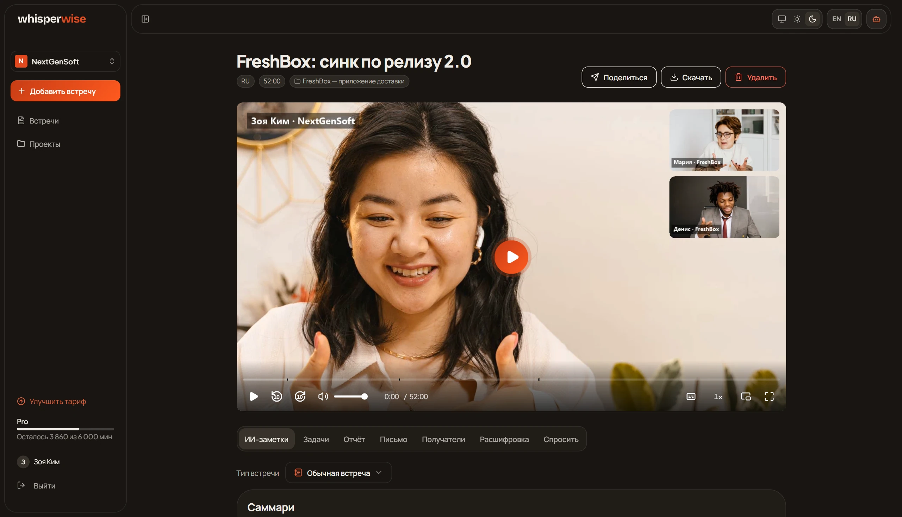

<!doctype html>
<html lang="ru">
<head>
<meta charset="utf-8">
<meta name="viewport" content="width=device-width, initial-scale=1">
<meta name="robots" content="noindex">
<title>whisperwise — презентация</title>
<style>
@font-face { font-family: 'Deck'; src: url(deck-fonts/jakarta-latin.woff2) format('woff2'); font-weight: 200 800; unicode-range: U+0000-00FF, U+2000-206F, U+20AC, U+2122, U+2190-2193, U+2212; }
@font-face { font-family: 'Deck'; src: url(deck-fonts/manrope-cyrillic.woff2) format('woff2'); font-weight: 200 800; unicode-range: U+0301, U+0400-045F, U+0490-0491, U+04B0-04B1, U+2116; }
:root {
  --bg: #191613; --s1: #201C17; --s2: #2C2822;
  --line: rgba(240, 237, 230, .09); --line2: rgba(240, 237, 230, .16);
  --text: #F0EDE6; --muted: rgba(240, 237, 230, .66); --faint: rgba(240, 237, 230, .42);
  --accent: #E1491F; --accent-soft: rgba(225, 73, 31, .14);
}
* { box-sizing: border-box; }
html { scroll-snap-type: y mandatory; background: var(--bg); scrollbar-width: none; }
body { margin: 0; background: var(--bg); color: var(--text); font-family: 'Deck', system-ui, sans-serif; -webkit-font-smoothing: antialiased; }
h1, h2, h3, p { margin: 0; }

/* A slide: the page height, a 16:9 frame in it; every size inside is in cqi of that frame. */
.s { height: 100vh; display: grid; place-items: center; scroll-snap-align: start; }
.f { position: relative; width: min(100vw, 177.78vh); aspect-ratio: 16 / 9; overflow: hidden; container-type: inline-size; background: var(--bg); }
.in { position: absolute; inset: 3.6cqi 4.6cqi 4.6cqi; display: flex; flex-direction: column; gap: 2cqi; }
.foot { position: absolute; left: 4.6cqi; right: 4.6cqi; bottom: 1.7cqi; display: flex; justify-content: space-between; font-size: .85cqi; color: var(--faint); letter-spacing: .02em; }
.foot b { color: var(--muted); font-weight: 600; }

.k { font-size: .95cqi; font-weight: 700; letter-spacing: .14em; text-transform: uppercase; color: var(--accent); }
h1 { font-size: 5.2cqi; line-height: 1.03; letter-spacing: -.035em; font-weight: 800; }
h2 { font-size: 2.5cqi; line-height: 1.12; letter-spacing: -.025em; font-weight: 750; }
h3 { font-size: 1.4cqi; line-height: 1.25; letter-spacing: -.01em; font-weight: 700; }
.head { display: flex; flex-direction: column; gap: .7cqi; }
.head p { font-size: 1.15cqi; line-height: 1.5; color: var(--muted); max-width: 72cqi; }
.lead { font-size: 1.5cqi; line-height: 1.5; color: var(--muted); }

/* Screens. Desktop shots are 1707×979, phones 390×844. */
.shot { margin: 0; display: flex; flex-direction: column; gap: .6cqi; min-width: 0; }
.shot img { display: block; width: 100%; height: auto; border-radius: .8cqi; border: 1px solid var(--line2); background: var(--s1); }
.shot.ph img { border-radius: 2.2cqi; }
.shot figcaption { display: flex; gap: .6cqi; font-size: .98cqi; line-height: 1.35; color: var(--muted); }
.shot figcaption b { color: var(--text); font-weight: 650; }
/* A screen opened from the deck: fitted to the window, phones by their height. */
.shot img, .cover img.hero { cursor: zoom-in; }
.lb { position: fixed; inset: 0; z-index: 10; display: none; place-content: center; justify-items: center; gap: 12px; background: rgb(12, 10, 9); cursor: zoom-out; }
.lb.on { display: grid; }
.lb img { max-width: calc(100vw - 160px); max-height: calc(100vh - 96px); border-radius: 10px; border: 1px solid var(--line2); background: var(--s1); }
.lb img.ph { border-radius: calc((100vh - 96px) * 390 / 844 * .14); }
.lb p { font-size: 15px; color: var(--muted); }
.lb p b { color: var(--text); font-weight: 650; }
.lb button { position: absolute; width: 44px; height: 44px; display: grid; place-items: center; border: 0; border-radius: 12px; background: rgba(255, 255, 255, .08); color: var(--text); cursor: pointer; }
.lb button:hover { background: rgba(255, 255, 255, .16); }
.lb button svg { width: 22px; height: 22px; }
.lb .x { top: 16px; right: 16px; }
.lb [data-d] { top: calc(50% - 22px); }
.lb [data-d="-1"] { left: 16px; }
.lb [data-d="1"] { right: 16px; }
.n { flex: none; width: 1.6cqi; height: 1.6cqi; border-radius: 50%; background: var(--accent); color: #fff; font-size: .85cqi; font-weight: 700; display: grid; place-items: center; }

/* Layouts by how many screens a slide holds. */
.body { flex: 1; min-height: 0; display: grid; gap: 1.6cqi; align-content: center; justify-content: center; }
.L2 .body { grid-template-columns: repeat(2, 44.6cqi); }
.L3 .body { grid-template-columns: 61.5cqi 27.5cqi; }
.L3 .body > :first-child { grid-row: span 2; }
.L6 .body { grid-template-columns: repeat(3, 29cqi); row-gap: 1cqi; }
.L6 .shot figcaption { min-height: 1.4cqi; }
.side { position: absolute; inset: 3.6cqi 4.6cqi 4.6cqi; display: grid; grid-template-columns: 22cqi 1fr; gap: 3cqi; align-items: center; }
.side .body { grid-template-columns: repeat(2, 32cqi); }
.L1 .body { grid-template-columns: 61cqi; }
.L5 .body { grid-template-columns: repeat(3, 29.2cqi); }
.L5 .body > .head { align-self: center; padding-right: 1cqi; }
.LP .body { grid-auto-flow: column; grid-auto-columns: 16.4cqi; column-gap: 1.6cqi; }

/* Scenario: who it is, then the frames in order. */
.who { display: flex; flex-direction: column; gap: 1.4cqi; }
.who .tag { align-self: flex-start; padding: .45cqi .9cqi; border-radius: 99cqi; background: var(--accent-soft); color: var(--accent); font-size: .95cqi; font-weight: 700; }
.who p { font-size: 1.15cqi; line-height: 1.55; color: var(--muted); }
.who .goal { padding: 1.1cqi 1.2cqi; border-radius: 1cqi; background: var(--s1); border: 1px solid var(--line); font-size: 1.05cqi; line-height: 1.5; }
.who .goal b { display: block; margin-bottom: .3cqi; font-size: .85cqi; letter-spacing: .1em; text-transform: uppercase; color: var(--faint); }

/* Cover and section breaks. */
.cover { position: absolute; inset: 0 0 0 4.6cqi; display: grid; grid-template-columns: 36cqi 1fr; gap: 4cqi; align-items: center; }
.cover .logo { width: 13cqi; height: auto; display: block; }
.cover .txt { display: flex; flex-direction: column; gap: 2cqi; }
.cover .meta { font-size: 1.05cqi; color: var(--faint); line-height: 1.6; }
.cover img.hero { width: 100%; border-radius: 1cqi 0 0 1cqi; border: 1px solid var(--line2); border-right: 0; }
.div { position: absolute; inset: 0 4.6cqi; display: flex; flex-direction: column; justify-content: center; gap: 1.6cqi; }
.div .num { font-size: 12cqi; font-weight: 800; line-height: .9; letter-spacing: -.05em; color: var(--accent); }
.div p { font-size: 1.6cqi; line-height: 1.5; color: var(--muted); max-width: 60cqi; }

/* Cards: the product map, the questions, the steps for the backend. */
.cards { flex: 1; min-height: 0; display: grid; gap: 1.2cqi; align-content: center; }
.card { padding: 1.5cqi 1.6cqi; border-radius: 1.2cqi; background: var(--s1); border: 1px solid var(--line); display: flex; flex-direction: column; gap: .7cqi; min-width: 0; }
.card .ic { width: 2.6cqi; height: 2.6cqi; border-radius: .7cqi; background: var(--accent-soft); color: var(--accent); display: grid; place-items: center; }
.card .ic svg { width: 1.5cqi; height: 1.5cqi; }
.card p, .card li { font-size: 1.02cqi; line-height: 1.5; color: var(--muted); }
.card ul { margin: 0; padding-left: 1.2cqi; display: flex; flex-direction: column; gap: .2cqi; }
.card code, .tbl code, .card pre { font-family: ui-monospace, 'Cascadia Code', Consolas, monospace; font-size: .92em; color: var(--text); }
.card pre { margin: 0; padding: 1cqi 1.1cqi; border-radius: .7cqi; background: var(--bg); border: 1px solid var(--line); white-space: pre-wrap; line-height: 1.6; font-size: .95cqi; }
.card .big { font-size: 3cqi; font-weight: 800; letter-spacing: -.03em; color: var(--text); line-height: 1; }

/* Steps joined by arrows: the journey, the contract loop. */
.flow .cards { grid-auto-flow: column; grid-auto-columns: 1fr; }
.flow .card { position: relative; }
.c2 .cards { grid-template-columns: 1.4fr 1fr; }
.c3 .cards { grid-template-columns: repeat(3, 1fr); }
.c4 .cards { grid-template-columns: repeat(4, 1fr); }
.map .cards { grid-template-columns: repeat(3, 1fr); }
.map .card { flex-direction: row; align-items: flex-start; gap: 1.2cqi; }
.card .t { display: flex; flex-direction: column; gap: .7cqi; min-width: 0; }
.card .ic.num { font-size: 1.2cqi; font-weight: 800; }
.L8 .body { grid-template-columns: repeat(4, 20.8cqi); row-gap: 1.4cqi; }
.side.one { grid-template-columns: 25cqi 1fr; }
.side.one .body { grid-template-columns: 60cqi; }
.head ul { margin: .4cqi 0 0; padding-left: 1.2cqi; display: flex; flex-direction: column; gap: .5cqi; font-size: 1.1cqi; line-height: 1.45; color: var(--muted); }
.head ul li::marker { color: var(--accent); }
.flow .card + .card::before { content: ''; position: absolute; left: -1.05cqi; top: 50%; width: .9cqi; height: .9cqi; border-top: 2px solid var(--accent); border-right: 2px solid var(--accent); transform: translate(-25%, -50%) rotate(45deg); }

/* The contracts table. */
.tbl { width: 100%; border-collapse: collapse; font-size: 1.02cqi; }
.tbl th { text-align: left; font-size: .82cqi; letter-spacing: .1em; text-transform: uppercase; color: var(--faint); font-weight: 700; padding: 0 1cqi .8cqi 0; }
.tbl td { padding: .7cqi 1cqi .7cqi 0; border-top: 1px solid var(--line); color: var(--muted); vertical-align: top; }
.tbl td:first-child { color: var(--text); font-weight: 650; }
.tbl td.num { font-variant-numeric: tabular-nums; color: var(--text); }
.pill { display: inline-block; padding: .15cqi .6cqi; border-radius: 99cqi; font-size: .85cqi; background: var(--s2); color: var(--muted); }
.pill.on { background: var(--accent-soft); color: var(--accent); }

@media print {
  html { scroll-snap-type: none; }
  .lb { display: none !important; }
  @page { size: 1600px 900px; margin: 0; }
  .s { height: auto; break-after: page; }
  .f { width: 1600px; }
  * { -webkit-print-color-adjust: exact; print-color-adjust: exact; }
}
</style>
</head>
<body>
<main id="deck"></main>
<script>
// Lucide icons, inner paths only; svg(name) draws one.
const I = {
  x: '<path d="M18 6 6 18"/><path d="m6 6 12 12"/>',
  prev: '<path d="m15 18-6-6 6-6"/>',
  next: '<path d="m9 18 6-6-6-6"/>',
  login: '<path d="M15 3h4a2 2 0 0 1 2 2v14a2 2 0 0 1-2 2h-4"/><polyline points="10 17 15 12 10 7"/><line x1="15" x2="3" y1="12" y2="12"/>',
  file: '<path d="M15 2H6a2 2 0 0 0-2 2v16a2 2 0 0 0 2 2h12a2 2 0 0 0 2-2V7Z"/><path d="M14 2v4a2 2 0 0 0 2 2h4"/><path d="M10 9H8"/><path d="M16 13H8"/><path d="M16 17H8"/>',
  upload: '<path d="M21 15v4a2 2 0 0 1-2 2H5a2 2 0 0 1-2-2v-4"/><polyline points="17 8 12 3 7 8"/><line x1="12" x2="12" y1="3" y2="15"/>',
  play: '<polygon points="6 3 20 12 6 21 6 3"/>',
  folder: '<path d="M20 20a2 2 0 0 0 2-2V8a2 2 0 0 0-2-2h-7.9a2 2 0 0 1-1.69-.9L9.6 3.9A2 2 0 0 0 7.93 3H4a2 2 0 0 0-2 2v13a2 2 0 0 0 2 2Z"/>',
  users: '<path d="M16 21v-2a4 4 0 0 0-4-4H6a4 4 0 0 0-4 4v2"/><circle cx="9" cy="7" r="4"/><path d="M22 21v-2a4 4 0 0 0-3-3.87"/><path d="M16 3.13a4 4 0 0 1 0 7.75"/>',
  settings: '<path d="M20 7h-9"/><path d="M14 17H5"/><circle cx="17" cy="17" r="3"/><circle cx="7" cy="7" r="3"/>',
  mail: '<rect width="20" height="16" x="2" y="4" rx="2"/><path d="m22 7-8.97 5.7a1.94 1.94 0 0 1-2.06 0L2 7"/>',
  alert: '<path d="m21.73 18-8-14a2 2 0 0 0-3.48 0l-8 14A2 2 0 0 0 4 21h16a2 2 0 0 0 1.73-3"/><path d="M12 9v4"/><path d="M12 17h.01"/>',
  mic: '<path d="M12 2a3 3 0 0 0-3 3v7a3 3 0 0 0 6 0V5a3 3 0 0 0-3-3Z"/><path d="M19 10v2a7 7 0 0 1-14 0v-2"/><line x1="12" x2="12" y1="19" y2="22"/>',
  bot: '<path d="M12 8V4H8"/><rect width="16" height="12" x="4" y="8" rx="2"/><path d="M2 14h2"/><path d="M20 14h2"/><path d="M15 13v2"/><path d="M9 13v2"/>',
  calendar: '<path d="M8 2v4"/><path d="M16 2v4"/><rect width="18" height="18" x="3" y="4" rx="2"/><path d="M3 10h18"/>',
  card: '<rect width="20" height="14" x="2" y="5" rx="2"/><line x1="2" x2="22" y1="10" y2="10"/>',
  send: '<path d="m22 2-7 20-4-9-9-4Z"/><path d="M22 2 11 13"/>',
  chat: '<path d="M21 15a2 2 0 0 1-2 2H7l-4 4V5a2 2 0 0 1 2-2h14a2 2 0 0 1 2 2z"/>',
  tasks: '<path d="m3 17 2 2 4-4"/><path d="m3 7 2 2 4-4"/><path d="M13 6h8"/><path d="M13 12h8"/><path d="M13 18h8"/>',
  phone: '<rect width="14" height="20" x="5" y="2" rx="2" ry="2"/><path d="M12 18h.01"/>',
  branch: '<line x1="6" x2="6" y1="3" y2="15"/><circle cx="18" cy="6" r="3"/><circle cx="6" cy="18" r="3"/><path d="M18 9a9 9 0 0 1-9 9"/>',
  server: '<rect width="20" height="8" x="2" y="2" rx="2" ry="2"/><rect width="20" height="8" x="2" y="14" rx="2" ry="2"/><line x1="6" x2="6.01" y1="6" y2="6"/><line x1="6" x2="6.01" y1="18" y2="18"/>',
  db: '<ellipse cx="12" cy="5" rx="9" ry="3"/><path d="M3 5V19A9 3 0 0 0 21 19V5"/><path d="M3 12A9 3 0 0 0 21 12"/>',
  monitor: '<rect width="20" height="14" x="2" y="3" rx="2"/><line x1="8" x2="16" y1="21" y2="21"/><line x1="12" x2="12" y1="17" y2="21"/>',
  flask: '<path d="M10 2v7.527a2 2 0 0 1-.211.896L4.72 20.55a1 1 0 0 0 .9 1.45h12.76a1 1 0 0 0 .9-1.45l-5.069-10.127A2 2 0 0 1 14 9.527V2"/><path d="M8.5 2h7"/><path d="M7 16h10"/>',
  terminal: '<polyline points="4 17 10 11 4 5"/><line x1="12" x2="20" y1="19" y2="19"/>',
  code: '<path d="M10 12.5 8 15l2 2.5"/><path d="m14 12.5 2 2.5-2 2.5"/><path d="M14 2v4a2 2 0 0 0 2 2h4"/><path d="M15 2H6a2 2 0 0 0-2 2v16a2 2 0 0 0 2 2h12a2 2 0 0 0 2-2z"/>',
  toggle: '<rect width="20" height="12" x="2" y="6" rx="6" ry="6"/><circle cx="16" cy="12" r="2"/>',
  help: '<circle cx="12" cy="12" r="10"/><path d="M9.09 9a3 3 0 0 1 5.83 1c0 2-3 3-3 3"/><path d="M12 17h.01"/>',
  user: '<path d="M19 21v-2a4 4 0 0 0-4-4H9a4 4 0 0 0-4 4v2"/><circle cx="12" cy="7" r="4"/>',
  plug: '<path d="M12 22v-5"/><path d="M9 8V2"/><path d="M15 8V2"/><path d="M18 8v5a4 4 0 0 1-4 4h-4a4 4 0 0 1-4-4V8Z"/>',
};

// Slides in order. A shot is [deck-<name>.png, bold, rest]; the layout follows the count.
const SLIDES = [];
let SEC = 'Обзор';
const add = (s) => SLIDES.push({ sec: SEC, ...s });
const part = (num, h, p) => { SEC = h; add({ kind: 'div', num, h, p }); };

add({ kind: 'cover' });
add({
  kind: 'what', k: 'Что это', h: 'Записи встреч превращаются в работу',
  p: 'Загрузите запись или позовите бота на звонок. whisperwise расшифрует, соберёт заметки по типу встречи, вынесет задачи в трекер и подготовит письмо участникам.',
  ul: ['Файл, запись в браузере или бот в Zoom, Meet, Teams', 'Расшифровка с говорящими и таймкодами', 'Заметки по шаблону: синк, бриф, ретро, kickoff…', 'Задачи в Linear, письмо-итог, вопросы к встрече'],
  shots: [['meeting', 'Встреча FreshBox', 'заметки, плеер и вкладки']],
});
add({
  kind: 'cards', cls: 'map', k: 'Карта продукта', h: 'Девять разделов',
  cards: [
    ['login', 'Вход и первые шаги', 'Google или код на почту, знакомство в три шага, приглашение в команду.'],
    ['file', 'Встречи', 'Список или карточки, поиск по тексту, фильтры по проекту и автору.'],
    ['upload', 'Добавить встречу', 'Загрузить файл, записать в браузере или позвать бота на звонок.'],
    ['play', 'Встреча', 'Плеер с видео и субтитрами, заметки, задачи, отчёт, письмо, расшифровка, вопросы.'],
    ['folder', 'Проекты', 'Встречи по клиентам, люди проекта, настройки, архив.'],
    ['users', 'Команда', 'Люди и роли, тариф и минуты, бот, уведомления, активность.'],
    ['settings', 'Настройки', 'Профиль, тема и язык, Google Календарь, Telegram, API-токены.'],
    ['mail', 'Письма', 'Итоги участникам, уведомления, отписка в один клик.'],
    ['alert', 'Ошибки и края', 'Нет сети, сбой сервера, нет доступа, 404, пустые экраны.'],
  ],
});
add({
  kind: 'shots', cls: 'L8', k: 'Путь клиента', h: 'От входа до письма участникам за первый день',
  shots: [
    ['signin', 'Вход', 'без пароля'], ['welcome', 'Знакомство', 'о себе'],
    ['welcome-first', 'Первая встреча', 'файл или бот'], ['upload-file', 'Загрузка', 'проект и тип'],
    ['meeting-transcribing', 'Расшифровка', 'процент и время'], ['meeting', 'Заметки', 'по шаблону'],
    ['meeting-tasks', 'Задачи', 'в Linear'], ['preview', 'Письмо', 'участникам'],
  ],
});

part('01', 'Сценарии', 'Семь историй: кто приходит, зачем, и какие экраны видит по пути.');
const scen = (tag, h, p, goal, shots) => add({ kind: 'scen', tag, h, p, goal, shots });
scen('Новый клиент', 'Первая встреча за пять минут',
  'Пришёл по ссылке с сайта. Входит без пароля, проходит знакомство в три шага и сразу добавляет первую запись.',
  'Первая расшифровка в день регистрации', [
    ['signin', 'Вход', 'Google или ссылка на почту'], ['signin-code', 'Код из письма', 'по ячейке на цифру'],
    ['welcome', 'Знакомство', 'кто вы и зачем'], ['welcome-first', 'Первая встреча', 'загрузить или позвать бота'],
  ]);
scen('Продажник', 'Итоги клиенту через час после звонка',
  'Записал звонок в Zoom и загрузил файл. Пока пьёт кофе, расшифровка готова, заметки собраны по шаблону, письмо-итог ждёт проверки.',
  'Письмо клиенту в тот же час', [
    ['upload-file', 'Загрузка', 'файл, проект и тип встречи'], ['meeting-transcribing', 'Расшифровка', 'процент и сколько ждать'],
    ['meeting', 'Готово', 'заметки, плеер, вкладки'], ['recap-ready', 'Письмо-итог', 'проверить и отправить'],
  ]);
scen('Руководитель проекта', 'Все договорённости FreshBox в одном месте',
  'Ведёт клиента FreshBox. Встречи проекта собраны вместе, задачи из встречи уходят в Linear, на вопрос по встрече — ответ с таймкодами.',
  'Ни одна договорённость не теряется', [
    ['projects', 'Проекты', 'клиенты команды'], ['project', 'FreshBox', 'встречи проекта'],
    ['meeting-tasks', 'Задачи', 'из встречи в Linear'], ['ask-answer', 'Вопрос к встрече', 'ответ со ссылками на минуты'],
  ]);
scen('Админ команды', 'Команда NextGenSoft работает по одним правилам',
  'Зовёт людей и раздаёт роли, настраивает бота и уведомления. Может вести несколько команд и переключаться между ними.',
  'Один раз настроить — дальше работает само', [
    ['team-people', 'Люди', 'роли и приглашения'], ['team', 'Команда', 'настройки'],
    ['team-bot', 'Бот', 'нотетейкер команды'], ['team-switch', 'Команды', 'переключение'],
  ]);
scen('Минуты кончаются', 'Предупредить до, а не после',
  'Команда на Pro. Когда минут мало — плашка заранее. Когда кончились — понятная причина и путь к тарифу, без тупиков.',
  'Клиент узнаёт о лимите от нас, а не от ошибки', [
    ['list-low', 'Мало минут', 'плашка заранее'], ['upload-out', 'Минут не хватает', 'в окне загрузки'],
    ['team-plans', 'Тарифы', 'за человека'], ['team-checkout', 'Возврат из оплаты', 'статус платежа'],
  ]);
scen('Автоматизация', 'Бот сам приходит на встречи',
  'Подключает Google Календарь и выбирает правило. Бот приходит на звонки сам, итоги прилетают в Telegram.',
  'Ни одной встречи вручную', [
    ['calendar-off', 'Календарь', 'ещё не подключён'], ['calendar', 'Правило', 'на какие встречи приходит бот'],
    ['bot', 'Бот по ссылке', 'на разовый звонок'], ['tg', 'Telegram', 'итоги в чат'],
  ]);
scen('Что-то пошло не так', 'Каждый сбой — понятный текст и следующий шаг',
  'Пропала сеть, в файле нет звука, заметки не собрались, приглашение истекло. Никаких белых экранов.',
  'Человек всегда знает, что делать дальше', [
    ['offline', 'Нет сети', 'изменения не сохранятся'], ['meeting-error', 'Ошибка файла', 'причина словами'],
    ['notes-failed', 'Заметки', 'не собрались, повторить'], ['join-expired', 'Приглашение', 'истекло'],
  ]);

part('02', 'Экраны и состояния', 'Каждый экран — с пустыми, загрузочными, ошибочными и крайними состояниями. 113 снимков с живого интерфейса на моках, команда NextGenSoft.');
const screens = (k, h, p, shots) => add({ kind: 'shots', k, h, p, shots });
screens('Вход', 'Без пароля', 'Google или одноразовый код на почту. Microsoft не делаем.', [
  ['signin', 'Вход', 'Google или ссылка на почту'], ['signin-code', 'Код из письма', 'шесть ячеек'],
  ['signin-wrong', 'Неверный код', 'ошибка у поля'], ['auth-error', 'Вход не удался', 'начать заново'],
]);
screens('Первые шаги', 'Знакомство и приглашение', 'Три шага после первого входа. Кого позвали — попадает сразу в команду.', [
  ['welcome', 'О себе', 'роль и задачи'], ['welcome-team', 'Команда', 'назвать или создать'],
  ['welcome-first', 'Первая встреча', 'файл или бот'], ['join', 'Приглашение', 'в NextGenSoft'],
  ['join-expired', 'Приглашение истекло', 'попросить новое'],
]);
screens('Встречи', 'Список встреч', 'Вид строками или карточками запоминается.', [
  ['list', 'Список', 'строками'], ['list-cards', 'Карточки', 'с саммари'],
  ['list-search', 'Поиск', 'по названию и тексту'], ['list-project', 'Фильтр', 'по проекту FreshBox'],
  ['list-filtered-empty', 'Фильтр пуст', 'в проекте нет встреч'], ['list-nomatch', 'Ничего не нашлось', 'сбросить поиск'],
]);
screens('Встречи', 'Пусто, загрузка, сбой', 'Пустые экраны одного вида: пунктирная карточка по центру.', [
  ['list-first', 'Первый вход', 'встреч ещё нет'], ['list-skeleton', 'Загрузка', 'скелетоны'],
  ['list-500', 'Сбой сервера', 'повторить'], ['list-offline', 'Не загрузилось', 'нет сети'],
  ['offline', 'Сеть пропала', 'строка внизу экрана'],
]);
screens('Добавить встречу', 'Загрузить файл', 'Тип встречи выбирается заранее — заметки соберутся по нему. Длина файла сверяется с минутами до отправки.', [
  ['add-menu', 'Добавить встречу', 'три способа'], ['upload', 'Загрузка', 'перетащить или выбрать'],
  ['upload-file', 'Файл выбран', 'проект и тип встречи'], ['upload-out', 'Лимит', 'минут не хватает'],
]);
screens('Добавить встречу', 'Запись и бот', 'Запись с микрофона прямо в браузере. Бот whisperwise заходит в Zoom, Meet или Teams по ссылке.', [
  ['record', 'Запись', 'с микрофона'], ['bot', 'Бот', 'позвать на звонок'], ['bot-link', 'Ссылка', 'Google Meet'],
]);
screens('Встреча', 'Заметки', 'Собираются по типу встречи. Тип можно сменить — заметки пересоберутся.', [
  ['meeting', 'Заметки', 'по шаблону синка'], ['meeting-template', 'Тип встречи', 'сменить шаблон'],
  ['notes-building', 'Собираются', 'по новому типу'], ['notes-stale', 'Устарели', 'расшифровку правили'],
  ['notes-failed', 'Не собрались', 'повторить'], ['meeting-reader', 'Только чтение', 'нет прав на правку'],
]);
screens('Встреча', 'Плеер и видео', 'Свой плеер: аудио и видео, главы, субтитры, полный экран, картинка в картинке. При прокрутке видео уходит в мини-плеер.', [
  ['meeting-video', 'Видео звонка', 'в плеере встречи'], ['video-captions', 'Субтитры', 'реплика говорящего'],
  ['video-mini', 'Мини-плеер', 'едет со страницей'],
]);
screens('Встреча', 'Пока идёт обработка', 'Страница следит за статусом сама — обновлять не нужно.', [
  ['meeting-transcribing', 'Расшифровка', 'процент и сколько ждать'], ['meeting-preparing', 'Подготовка', 'файл в очереди'],
  ['meeting-lost', 'Связь потеряна', 'ждём сервер'], ['meeting-error', 'Ошибка', 'в файле нет звука'],
]);
screens('Встреча', 'Задачи и отчёт', 'Задачи из встречи с исполнителями уходят в трекер команды. Отчёт для клиента правится прямо на странице.', [
  ['meeting-tasks', 'Задачи', 'отправить в Linear'], ['meeting-report', 'Отчёт', 'для клиента'],
  ['report-edit', 'Правка отчёта', 'на месте'],
]);
screens('Встреча', 'Письмо по итогам', 'Короткое письмо, с которым уходит отчёт. Получателей видно до отправки.', [
  ['meeting-recap', 'Письмо', 'составить по итогам'], ['recap-ready', 'Готово', 'проверить текст'],
  ['rcpt', 'Получатели', 'кому уйдёт'], ['preview', 'Превью', 'как увидит клиент'],
]);
screens('Встреча', 'Расшифровка', 'Говорящие и таймкоды. Правка текста и имён, найти и заменить по всей встрече.', [
  ['meeting-transcript', 'Расшифровка', 'говорящие и время'], ['transcript-edit', 'Правка', 'текст и имена'],
  ['transcript-find', 'Найти и заменить', 'с подсветкой'],
]);
screens('Встреча', 'Спросить и ассистент', 'Вопрос к встрече — ответ со ссылками на минуты. WhisperChat открывается сбоку.', [
  ['meeting-ask', 'Спросить', 'вопрос к встрече'], ['ask-answer', 'Ответ', 'с таймкодами'],
  ['meeting-chat', 'WhisperChat', 'ассистент сбоку'],
]);
screens('Встреча', 'Поделиться и выгрузить', 'Ссылка открывает встречу без входа. Выгрузка в Word, PDF, Markdown и субтитры.', [
  ['share', 'Поделиться', 'ссылка на встречу'], ['meeting-guest', 'Гость', 'встреча без входа'],
  ['download', 'Скачать', 'Word, PDF, MD, SRT, VTT'], ['delete-confirm', 'Удалить', 'с подтверждением'],
  ['project-pill', 'Проект встречи', 'сменить'],
]);
screens('Проекты', 'Проекты команды', 'Проект — клиент или направление. Встреча без проекта тоже можно.', [
  ['projects', 'Проекты', 'клиенты команды'], ['projects-empty', 'Пусто', 'первый проект'],
  ['project-create', 'Новый проект', 'название'], ['project-missing', 'Не найден', 'удалён или нет доступа'],
]);
screens('Проекты', 'Страница проекта', 'Встречи, люди и настройки проекта: трекер, архив, удаление пустого.', [
  ['project', 'FreshBox', 'встречи проекта'], ['project-add', 'Добавить', 'встречу в проект'],
  ['project-people', 'Люди', 'кто видит проект'], ['project-settings', 'Настройки', 'трекер и архив'],
  ['project-archived', 'В архиве', 'вернуть одной кнопкой'],
]);
screens('Команда', 'Команда', 'Админ зовёт людей, раздаёт роли, ведёт несколько команд.', [
  ['team', 'Команда', 'настройки'], ['team-people', 'Люди', 'роли и приглашения'],
  ['team-switch', 'Переключатель', 'несколько команд'], ['team-create', 'Новая команда', 'из переключателя'],
  ['team-exit', 'Название', 'передать или удалить'], ['admins-only', 'Только админам', 'если зашёл участник'],
]);
screens('Команда', 'Тариф и минуты', 'Pro $10, Team $20 от 3 мест, Business $30 от 5 — за человека в месяц. Минуты — общий запас команды.', [
  ['billing', 'Тариф', 'кто потратил минуты'], ['team-plans', 'Тарифы', 'за год −20%'],
  ['team-checkout', 'Из оплаты', 'оплата получена'], ['list-low', 'Мало минут', 'плашка заранее'],
  ['list-out', 'Минуты кончились', 'когда новые'], ['list-unpaid', 'Не оплачено', 'платёж не прошёл'],
]);
screens('Команда', 'Бот, уведомления, активность', 'Бот команды зовётся whisperwise. Уведомления — почта и Telegram. Активность — кто что менял.', [
  ['team-bot', 'Бот', 'на какие встречи'], ['team-notes', 'Уведомления', 'почта и Telegram'],
  ['activity', 'Активность', 'кто что менял'],
]);
screens('Настройки', 'Профиль, календарь, API', 'Календарь видит только владелец. Команда — только встречи, которые записал бот.', [
  ['account', 'Профиль', 'имя, тема, язык'], ['calendar-off', 'Календарь', 'не подключён'],
  ['calendar', 'Календарь', 'правило для бота'], ['api', 'API', 'токены и curl'],
]);
screens('Настройки', 'Telegram', 'Итоги встреч и уведомления в личный чат. Привязка через бота.', [
  ['tg-none', 'Telegram', 'не подключён'], ['tg-wait', 'Ждём', 'подтверждения в боте'],
  ['tg', 'Подключён', 'итоги в чат'],
]);
screens('Письма', 'Отписка', 'Ссылка в каждом письме. Без входа, вернуть можно одной кнопкой.', [
  ['unsub-ask', 'Отписка', 'от заметок встреч'], ['unsub-done', 'Отписались', 'подписаться снова'],
  ['unsub-404', 'Ссылка', 'не найдена'],
]);
screens('Ошибки', 'Ошибки и края', 'Каждая ошибка — текст человеческим языком и путь назад.', [
  ['not-found', '404', 'страницы нет'], ['no-access', 'Нет доступа', 'чужая команда'],
  ['server-error', 'Сбой сервера', '500'], ['meeting-404', 'Встречи нет', 'ссылка неверна'],
  ['meeting-500', 'Встреча не открылась', 'повторить'],
]);
screens('Тема', 'Светлая тема', 'Системная, светлая или тёмная — переключатель в шапке и в настройках.', [
  ['list-light', 'Встречи', 'светлая тема'], ['meeting-light', 'Встреча', 'светлая тема'],
]);
const phones = (h, p, shots) => add({ kind: 'shots', phone: true, k: 'Телефон', h, p, shots });
phones('С телефона: вход и список', 'Контролы на всю ширину, меню поверх страницы.', [
  ['phone-signin', 'Вход', ''], ['phone-welcome', 'Знакомство', ''], ['phone-list', 'Встречи', ''],
  ['phone-nav', 'Меню', ''], ['phone-add', 'Добавить', ''],
]);
phones('С телефона: встреча', 'Вкладки одной строкой со скроллом.', [
  ['phone-upload', 'Загрузка', ''], ['phone-meeting', 'Встреча', ''], ['phone-video', 'Видео', ''],
  ['phone-tasks', 'Задачи', ''], ['phone-transcript', 'Расшифровка', ''],
]);
phones('С телефона: проект, команда, настройки', 'Те же разделы, что на компьютере.', [
  ['phone-download', 'Скачать', ''], ['phone-project', 'Проект', ''],
  ['phone-team', 'Тариф', ''], ['phone-account', 'Telegram', ''],
]);

part('03', 'Для Вовы', 'Как устроен код, контракты API, порядок работ на бэкенде и что решить до запуска.');
add({
  kind: 'cards', cls: 'c4', k: 'Архитектура', h: 'Три слоя и моки между ними',
  cards: [
    { ic: 'monitor', h: 'Клиент', p: '<code>public/</code> — чистые ES-модули без сборки. Темы, EN/RU, телефон.', ul: ['Страница = HTML + свой модуль', 'Общее в <code>enc/</code>: меню, иконки, плеер, отказы'] },
    { ic: 'server', h: 'Сервер', p: 'Node 22 + Hono, TypeScript через <code>--experimental-strip-types</code>.', ul: ['better-sqlite3 — данные', 'jose — сессии', 'Флаги фич: <code>FEATURES=teams,…</code>'] },
    { ic: 'plug', h: 'Снаружи', p: 'Подключаются за флагами и ключами из <code>.env</code>.', ul: ['Deepgram — расшифровка', 'Anthropic — заметки, ответы', 'Google Calendar, Paddle, Telegram, почта'] },
    { ic: 'toggle', h: 'Моки', p: '<code>server/dev-mocks/</code> — только с <code>DEV_MOCKS=1</code> и не в production.', ul: ['Встают после настоящих маршрутов', 'Dev-ручки <code>/api/dev/&lt;фича&gt;/…</code>', 'Письма — <code>GET /api/dev/outbox</code>'] },
  ],
});
add({
  kind: 'cards', cls: 'flow', k: 'Как устроена работа', h: 'Контракт → мок → UI → бэкенд',
  p: 'Шаги 1–3 сделаны по всем фичам. Работа бэкенда — шаг 4: заменить мок настоящим кодом, не меняя контракт.',
  cards: [
    { ic: 'code', n: '1', h: 'Контракт', p: '<code>docs/api/&lt;фича&gt;.md</code>: маршруты, тела, ошибки, права.' },
    { ic: 'server', n: '2', h: 'Мок', p: '<code>server/dev-mocks/&lt;фича&gt;.ts</code>, подключён в <code>index.ts</code>.' },
    { ic: 'monitor', n: '3', h: 'UI', p: 'За флагом фичи, целиком работает на моке.' },
    { ic: 'db', n: '4', h: 'Бэкенд', p: 'Настоящие маршруты, тесты держат контракт, мок удалён, флаг в <code>FEATURES</code>.' },
  ],
});
add({
  kind: 'table', k: 'Контракты', h: '11 контрактов, около 106 ручек',
  cols: ['Контракт', 'Флаг', 'Мок', 'Ручек', 'Статус'],
  rows: [
    ['teams', 'teams', 'teams.ts', 20, 'UI на моке'], ['profile', 'profile', 'profile.ts', 2, 'UI на моке'],
    ['projects', 'projects', 'projects.ts', 17, 'UI на моке'], ['templates', 'templates', 'templates.ts', 4, 'UI на моке'],
    ['auth', 'signin', 'signin.ts', 12, 'UI на моке'], ['billing', 'billing', 'billing.ts', 14, 'UI на моке'],
    ['bot', 'bot', 'bot.ts', 6, 'UI на моке'], ['calendar', 'calendar', 'calendar.ts', 11, 'UI на моке'],
    ['notify', 'notify', 'notify.ts', 18, 'UI на моке'], ['mail', '—', 'outbox.ts', '—', 'только контракт'],
    ['transcript-edits', '—', '—', 2, 'готово; Q&amp;A, саммари, CRM — впереди'],
  ],
});
add({
  kind: 'cards', cls: 'flow', k: 'Порядок', h: 'Четыре волны',
  p: 'Предложение по порядку — решает Вова. Каждая волна открывает следующей то, на что она опирается.',
  cards: [
    { n: '1', h: 'Команды', ul: ['teams + profile', 'projects', 'templates'] },
    { n: '2', h: 'Вход и деньги', ul: ['auth', 'billing'] },
    { n: '3', h: 'Бот и связь', ul: ['bot', 'calendar', 'notify + mail'] },
    { n: '4', h: 'Хвосты', ul: ['transcript-edits: Q&amp;A, саммари, CRM'] },
  ],
});
add({
  kind: 'cards', cls: 'c2', k: 'Запуск и тесты', h: 'Поднять у себя за минуту',
  cards: [
    { ic: 'terminal', h: 'Локально', pre: 'npm install\nDEV_MOCKS=1 npm run dev   # моки и dev-ручки\nnpm run typecheck        # tsc --noEmit\nnpm test                 # unit + integration\nRUN_LIVE_TESTS=1 npm run test:live   # платные вызовы' },
    { ic: 'flask', h: 'Тесты', big: '≈ 3 000', p: '282 файла, 2 993 зелёных. 6 падают только на Windows. Живые тесты с настоящими ключами — отдельно и по флагу.' },
  ],
});
add({
  kind: 'cards', cls: 'flow', k: 'Ветки', h: 'Стек из трёх веток, ничего не запушено',
  p: 'Публикуем стеком, когда Артём скажет «публикуй». Мёрджит Вова, по порядку слева направо.',
  cards: [
    { ic: 'branch', h: 'fix/login-next-backslash', p: '1 коммит: защита редиректа после входа.' },
    { ic: 'branch', h: 'feat/contracts-cross', p: '354 коммита от main: контракты, моки, сквозные правки контрактов.' },
    { ic: 'branch', h: 'feat/journey', p: '567 от main, 213 поверх contracts-cross: весь интерфейс из этой презентации.' },
  ],
});
add({
  kind: 'cards', cls: 'c3', k: 'Решить до запуска', h: 'Шесть открытых вопросов',
  cards: [
    { ic: 'card', h: 'Тарифы текущих клиентов', p: 'Переводим на цены за человека или оставляем как есть?' },
    { ic: 'users', h: 'Регистрация', p: 'Открытая для всех или только по приглашению?' },
    { ic: 'mail', h: 'Почта', p: 'Какой сервис отправляет письма: коды входа, итоги, уведомления?' },
    { ic: 'calendar', h: 'Google', p: 'Проверка приложения в Google для доступа к календарю.' },
    { ic: 'alert', h: 'Оплата из России', p: 'Paddle не принимает российские платежи. Чем платят эти клиенты?' },
    { ic: 'help', h: 'Порядок запуска', p: 'Открываем вход до того, как заработают лимиты минут?' },
  ],
});
add({
  kind: 'cards', cls: 'c3', k: 'Дальше', h: 'Кто что делает',
  cards: [
    { ic: 'user', h: 'Артём', ul: ['Ответы на шесть вопросов', 'Команда «публикуй» на стек веток'] },
    { ic: 'server', h: 'Вова', ul: ['Мёрдж стека в main', 'Волна 1: teams, profile, projects, templates', 'Выбор почтового сервиса'] },
    { ic: 'flask', h: 'Вместе', ul: ['Прогон пути клиента на настоящем бэкенде', 'Проверка на телефоне', 'Открытие входа первым клиентам'] },
  ],
});
</script>
<script>
const svg = (n) => `<svg viewBox="0 0 24 24" fill="none" stroke="currentColor" stroke-width="2" stroke-linecap="round" stroke-linejoin="round">${I[n] || ''}</svg>`;
const fig = ([name, b, rest], i, ph) => `<figure class="shot${ph ? ' ph' : ''}"><figcaption><span class="n">${i + 1}</span><span><b>${b}</b>${rest ? ' — ' + rest : ''}</span></figcaption></figure>`;
const figs = (s) => s.shots.map((x, i) => fig(x, i, s.phone)).join('');
const head = (s) => `<div class="head">${s.k ? `<div class="k">${s.k}</div>` : ''}<h2>${s.h}</h2>${s.p ? `<p>${s.p}</p>` : ''}${s.ul ? `<ul>${s.ul.map((li) => `<li>${li}</li>`).join('')}</ul>` : ''}</div>`;
const card = (c) => {
  if (Array.isArray(c)) c = { ic: c[0], h: c[1], p: c[2] };
  const ic = c.n ? `<div class="ic num">${c.n}</div>` : c.ic ? `<div class="ic">${svg(c.ic)}</div>` : '';
  return `<div class="card">${ic}<div class="t"><h3>${c.h}</h3>${c.big ? `<div class="big">${c.big}</div>` : ''}${c.p ? `<p>${c.p}</p>` : ''}`
    + `${c.ul ? `<ul>${c.ul.map((li) => `<li>${li}</li>`).join('')}</ul>` : ''}${c.pre ? `<pre>${c.pre}</pre>` : ''}</div></div>`;
};
const LAYOUT = { 1: 'L1', 2: 'L2', 3: 'L3', 6: 'L6' };

const R = {
  cover: () => `<div class="cover"><div class="txt">`
    + `<h1>Полная презентация продукта</h1><p class="lead">Встречи превращаются в заметки, задачи и письмо-итог. Все экраны и состояния, путь клиента, сценарии и план для бэкенда.</p>`
    + `<div class="meta">NextGenSoft · 27 октября 2026<br>для команды и Вовы</div></div></div>`,
  div: (s) => `<div class="div"><div class="num">${s.num}</div><h1>${s.h}</h1><p>${s.p}</p></div>`,
  what: (s) => `<div class="side one">${head(s)}<div class="body">${figs(s)}</div></div>`,
  scen: (s) => `<div class="side"><div class="who"><span class="tag">${s.tag}</span><h2>${s.h}</h2><p>${s.p}</p>`
    + `<div class="goal"><b>Цель</b>${s.goal}</div></div><div class="body">${figs(s)}</div></div>`,
  shots: (s) => {
    const n = s.shots.length;
    if (s.phone) return `<div class="in LP">${head(s)}<div class="body">${figs(s)}</div></div>`;
    if (n === 4 && !s.cls) return `<div class="side">${head(s)}<div class="body">${figs(s)}</div></div>`;
    if (n === 5) return `<div class="in L5"><div class="body">${head(s)}${figs(s)}</div></div>`;
    return `<div class="in ${s.cls || LAYOUT[n]}">${head(s)}<div class="body">${figs(s)}</div></div>`;
  },
  cards: (s) => `<div class="in ${s.cls || ''}">${head(s)}<div class="cards">${s.cards.map(card).join('')}</div></div>`,
  table: (s) => `<div class="in">${head(s)}<table class="tbl"><thead><tr>${s.cols.map((c) => `<th>${c}</th>`).join('')}</tr></thead><tbody>`
    + s.rows.map(([name, flag, mock, count, status]) => `<tr><td>${name}</td><td>${flag === '—' ? '—' : `<span class="pill on">${flag}</span>`}</td>`
      + `<td>${mock === '—' ? '—' : `<code>${mock}</code>`}</td><td class="num">${count}</td><td>${status}</td></tr>`).join('')
    + `</tbody></table></div>`,
};

const total = SLIDES.length;
const pad = (n) => String(n).padStart(2, '0');
document.getElementById('deck').innerHTML = SLIDES.map((s, i) => `<section class="s" id="${i + 1}"><div class="f">${R[s.kind](s)}`
  + (s.kind === 'cover' ? '' : `<div class="foot"><span>whisperwise · NextGenSoft · <b>${s.sec}</b></span><span>${pad(i + 1)} / ${total}</span></div>`)
  + `</div></section>`).join('');

// Keys: ←/→, PgUp/PgDn, Space, Home/End; F — full screen. The slide number stays in the address.
const slides = [...document.querySelectorAll('.s')];
const now = () => Math.round(window.scrollY / window.innerHeight);
const go = (i) => {
  i = Math.max(0, Math.min(total - 1, i));
  slides[i].scrollIntoView();
  history.replaceState(null, '', '#' + (i + 1));
};
document.addEventListener('keydown', (e) => {
  if (e.metaKey || e.ctrlKey || e.altKey) return;
  const step = { ArrowRight: 1, ArrowDown: 1, PageDown: 1, ' ': e.shiftKey ? -1 : 1, ArrowLeft: -1, ArrowUp: -1, PageUp: -1 }[e.key];
  if (step) { e.preventDefault(); go(now() + step); }
  else if (e.key === 'Home') { e.preventDefault(); go(0); }
  else if (e.key === 'End') { e.preventDefault(); go(total - 1); }
  else if (e.key === 'f' || e.key === 'F' || e.key === 'а' || e.key === 'А') {
    (document.fullscreenElement ? document.exitFullscreen() : document.documentElement.requestFullscreen())?.catch(() => {});
  }
});
if (location.hash) go(Number(location.hash.slice(1)) - 1);

// Click a screen: it opens fitted to the window. ←/→ walk every screen of the deck; Esc or a click
// closes, on the slide of the last screen seen if the arrows moved away.
const shots = [...document.querySelectorAll('.shot img')];
const lb = document.createElement('div');
lb.className = 'lb';
lb.innerHTML = `<p></p><button class="x" aria-label="Закрыть">${svg('x')}</button>`
  + `<button data-d="-1" aria-label="Назад">${svg('prev')}</button><button data-d="1" aria-label="Дальше">${svg('next')}</button>`;
document.body.append(lb);
const [big, cap] = lb.querySelectorAll('img, p');
let at = 0, moved = false;
const show = (i) => {
  at = (i + shots.length) % shots.length;
  const im = shots[at], text = im.closest('figure').querySelector('figcaption > span:last-child');
  big.src = im.src;
  big.classList.toggle('ph', !!im.closest('.ph'));
  cap.innerHTML = `${text.innerHTML} · ${at + 1} / ${shots.length}`;
  lb.classList.add('on');
};
const hide = () => {
  lb.classList.remove('on');
  if (moved) go(slides.indexOf(shots[at].closest('.s')));
  moved = false;
};
document.addEventListener('click', (e) => {
  if (!e.target.matches('.shot img, .cover img.hero')) return;
  const i = shots.indexOf(e.target);
  show(i >= 0 ? i : shots.findIndex((im) => im.src === e.target.src));
});
lb.addEventListener('click', (e) => {
  const d = e.target.closest('[data-d]');
  if (d) { moved = true; show(at + Number(d.dataset.d)); } else hide();
});
lb.addEventListener('wheel', (e) => e.preventDefault(), { passive: false });
window.addEventListener('keydown', (e) => {
  if (!lb.classList.contains('on')) return;
  e.preventDefault();
  e.stopPropagation();
  const step = { ArrowRight: 1, ArrowDown: 1, PageDown: 1, ' ': 1, ArrowLeft: -1, ArrowUp: -1, PageUp: -1 }[e.key];
  if (step) { moved = true; show(at + step); }
  else if (e.key === 'Escape') hide();
}, true);
window.addEventListener('beforeprint', () => document.querySelectorAll('img[loading]').forEach((im) => { im.loading = 'eager'; }));
</script>
</body>
</html>
